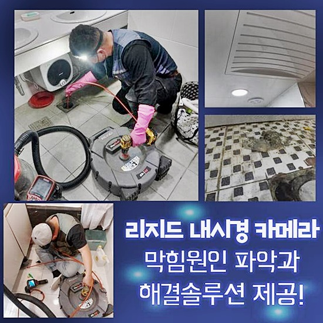
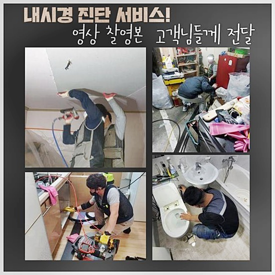
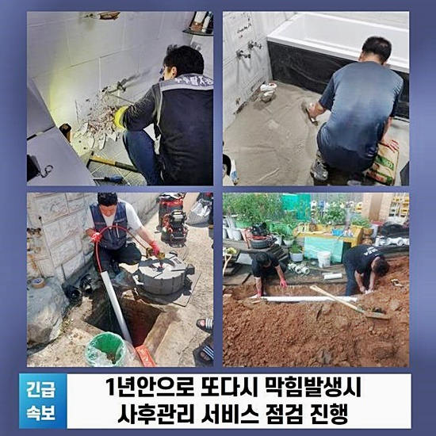
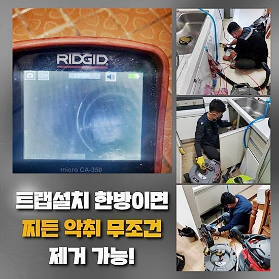
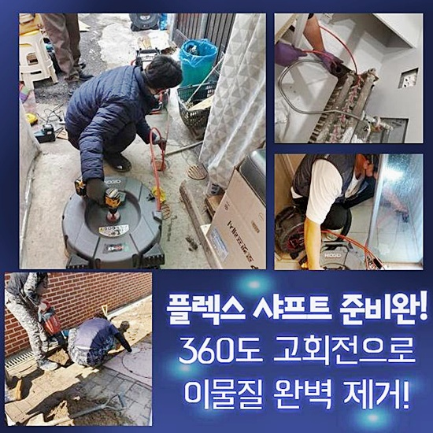
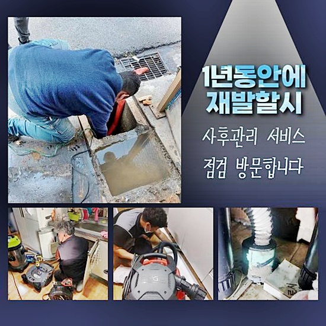
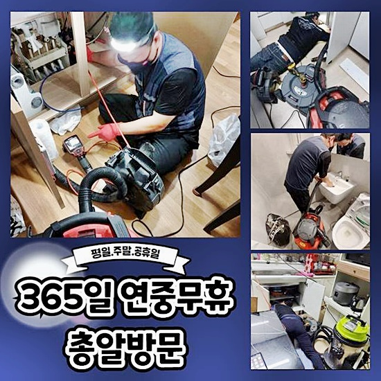

🏠 고양시 내곡동싱크대배수관막힘 대자동 배수구뚫기 누수탐지
고양 싱크대막힘 전문 시공 후기

📋 작업 개요
- 위치: 고양
- 서비스 유형: 싱크대막힘, 하수구막힘, 배관막힘, 누수수리, 역류해결, 뚫는업체, 배관청소, 설비공사
- 작업 일시: 2024. 6. 25. 9:22
- 업체명: 하수구수사대 (010-5615-2118)
🔍 문제 상황
고양시 내곡동싱크대배수관막힘 대자동 배수구뚫기 누수탐지
수많은 배수장애들을 수습하고 복구하는 전문진이에요
고객분이 의뢰할땐 꼼꼼히 고민에 대해 응대하고 있는데요
갑작스럽게 화장실 내측에 배수구가 심상치않다는 문제로 재빨리 해당 위치로 방문했어요
화장실의 경우 사용을 하고난 뒤에는 머리카락이라던가 여러가지의 이물이 쌓여 배수장애가 생기는 사례가 상당해요
이와 비슷한 상황에선 근방에서 판매하는 용품들로는 증상을 꺼트리는것이 까다로운 탓에 뚫어줄때는 전문가 용 기기를 통하여 증세의 시발점 부위를 시정해야겠습니다
일부 고객님들은 끓는 점에 도달한 물을 부은 뒤 문제들이 양산된 원인을 제거시키도록 진행하는 고객님들도 계세요
이러한 방식도 증상완화를 꾀하기가 힘듭니다
끓는 물들을 흐르게한다면 고착물의 경우 더욱더 굳어지는 특징들을 띄므로 배관 컨디션을 심화시키는데요
이때문에 배수구의 증상의 경우엔 성능이 좋은 장치를 써야합니다
진단 시점에는 쓰는 장치를 이상이 없는지 체크해보고 고객분이 알려주신 공간으로 조속히 달려갔죠
쉽게 해결되는 하수관로의 증상외에 앞서 안내한것처럼 머리카락뭉치와 석회질 성분의 슬러지가 쌓여요

🔎 원인 분석
💡 전문가 진단: 정밀 진단 장비를 사용하여 슬러지의 고착 여부를 판명하고 타격/세척 작업을 실시했습니다.
그렇기에 주기적으로 관리법 실시를 이어주는게 중요합니다
이제는 해결책들을 고지하고 바로 원인들을 살펴 문제를 얼마나 잘 헤쳐나가는지 꼼꼼히 설명하겠습니다
문제가 생긴 구간은 화장실쪽에 매립된 아래 배관이였어요
체크하니 일반적인 사각형태의 부속품은 아니었고 트렌치부속으로 보여졌어요
배수불가는 물론 예상치않은 역류되는 문제도 지속되고 있었습니다
보통의 경우 트랩부분을 지나 라인으로 안빠진 이물은 걸러져서 이물을 제외한 하수들은 하단으로 이동시키는 장점들이 존재합니다
배관 위로 안측에 쌓여있던 잔해가 배관 위로 역류이슈를 불거지게해 트랩설비도 무용지물인 상태였답니다
고객님은 증세가 불거지고서 샤워실을 전혀 쓸 수 없겠다고 고통을 말씀해주셨는데 불편들이 어마어마했을것으로 판단되었는데요
이토록 화장실내부의 하수라인에서 문제들이 생기면 다양한 측면에서 피해들이 야기됩니다
그렇기에 빠르며 빈틈없이 원인을 해소하는게 가장 필수적이죠
먼저 증상의 근원지부터 인지해야되겠습니다
헤드부분에 시야확보 부품이 딸린 내시경기기로 배수관으로 이용한다라면 이물의 위치를 파악해가며 작업 스팟을 특정해 수리를 하게되죠
해당 이점으로 여러가지의 증상들이 발생되면 절대적으로 이용되어야하는 전문기기죠

🔧 작업 과정
입구에서 이물이 많은 까닭에 장비를 배수라인으로 삽입하는게 쉽지 않았습니다
허나 이런 변수에 좌절하기엔 이릅니다
꾸준히 밀어넣으니 비로소 케이블을 투입했고 심부까지 관찰할 목적으로 내측을 보던 중에 시야가 확보가 안되었어요
엘보구간엔 슬러지들도 어마어마했죠
심지어 물빠짐을 온전하게 파악할 수 없는것으로 파악하건대 외부에서도 깊은 지점에도 많은 양의 잔해가 쌓인걸 확인해보았습니다
또 하수라인으로 내시경을 삽입하니 벽측에선 형체가 불분명한 것이 육안으로 드러났죠
라인의 끝부분엔 엉켜버린 형태로 축적된 이물들이 잔존해 있던 상태였습니다
장치를 투입해봐도 틈들은 보이질 않았으나 고착화된 잔여물은 확실하게 확인할 수 있었어요
이물이 파악되지 않았어도 단단하게 굳은 잔여물이 하수도의 끝머리서부터 침전된 모습을 알 수 있었어요
애로사항이 많던 배관컨디션이였으나 고객의 의뢰였기떄문에 넋놓고 방임적인 태도로 일관할 수 없었어요
초입에 누적된 여러가지의 오염물은 수작업으로 제거시키고 내부에 쌓인 개체는 샤프트 장비를 통하여 제거시킬 계획을 세우게 되었어요
성능좋은 도구들을 가용하여 빠르게 해결에 뛰어들었습니다
그러나 이물들을 제거시키며 의문의 요소가 존재했어요
어떠한 까닭으로 바닥재가 하수라인에서 축적된건지 알기가 어려웠습니다
이같은 상황을 알고서 청소해보니 고객은 이러한 내용을 운을 떼기 시작하셨어요
듣고보니 얼마전 리모데링을 진행하였는데 그때 조각이 배수관으로 흘러들어간걸로 파악된다고 전달하셨어요
이러한 공사들이 진행되었을땐 폐기물들은 기술자들이 폐기시키는게 맞습니다만 종종 정리하는것에 철두철미하지 못한 전문진일 시엔 이같이 바람직하지 않은 방법으로 잔해수돗물을 흘려보내요
이를 종합시켜보니 저희의 전문가가 달려갔던 현장에서 시작해 이와같은 문제로 불편들을 지속적으로 받으신것으로 보였어요
여기저기 장판잔해가라는 폐기물이 배수과정을 이뤄지지못하게 하면서 흘러야될 하수들이 빠져나가지를 못한것입니다
반복을 거친 이물청소와 흡입절차까지 해보니 마침내 배수관을 뚫어내었어요


✅ 작업 완료
배수가 잘 이뤄지는지 체크도 하였더니 이전과 다른 양상으로 배수되었어요
작업을 하고난뒤 이처럼 내려가야하나 하수관로가 여러 이물질로 가로막혔기에 고여버리다가 역류증상을 발생된거에요
수많은 장소를 찾아뵈었지만 이러한 문제를 마주할때면 기분이 좋지않고 고객분이 감당했을 불편들에 깊은 공감이 되는데요
이것처럼 오류들을 깔끔하게 고쳐내고 저희의 전문가들도 현장에서 철수할 수 있었어요
일상생활을 하시다가 불현듯 증상이 보일 경우 저희들의 해결방안을 기초로 해 안전하게 대응하는게 중요하겠습니다
이외에 의문이 존재하신다면 서둘러 전화하셔서 질의해도 좋으니 편히 문의가 필요할 경우 즉각 도움을 드릴 수 있도록 할게요!




⚠️ 베란다 누수 및 방수 관리 방법
- ✅ 비가 많이 올 때 창틀 주변이나 아래층 천장에 얼룩이 생기는지 정기적으로 확인해 보세요.
- ✅ 우수관 주변 실리콘 마감이 들뜨거나 깨진 틈새가 있는지 손상 여부를 수시로 체크하세요.
- ✅ 베란다 바닥 타일의 줄눈(메지)이 소실되면 그 틈으로 물이 침투하여 누수가 유발됩니다.
- ✅ 누수 의심 증상 발견 시 방치하면 아래층 손실이 커지므로 즉시 전문가의 진단을 받으십시오.
💡 핵심 정리
- 확실한 장비 작업(내시경 점검 및 샤프트 스케일링)으로 원인을 뿌리 뽑습니다.
- 작업 후 1년 이내에 동일한 부위 재발 시 100% 무상 A/S 서비스를 보장합니다.
- 서울 · 경기 · 인천 전 지역에 24시간 언제든 긴급 출동할 수 있도록 항시 대기 중입니다.
❓ 자주 묻는 질문 (FAQ)
🚨 고양 싱크대막힘 문제로 고민이신가요?
정확한 원인 진단과 확실한 시공으로 재발 없는 해결을 약속드립니다.
24시간 긴급 출동 | 서울 · 경기 · 인천 전지역 | 1년 내 재발 시 무상 A/S